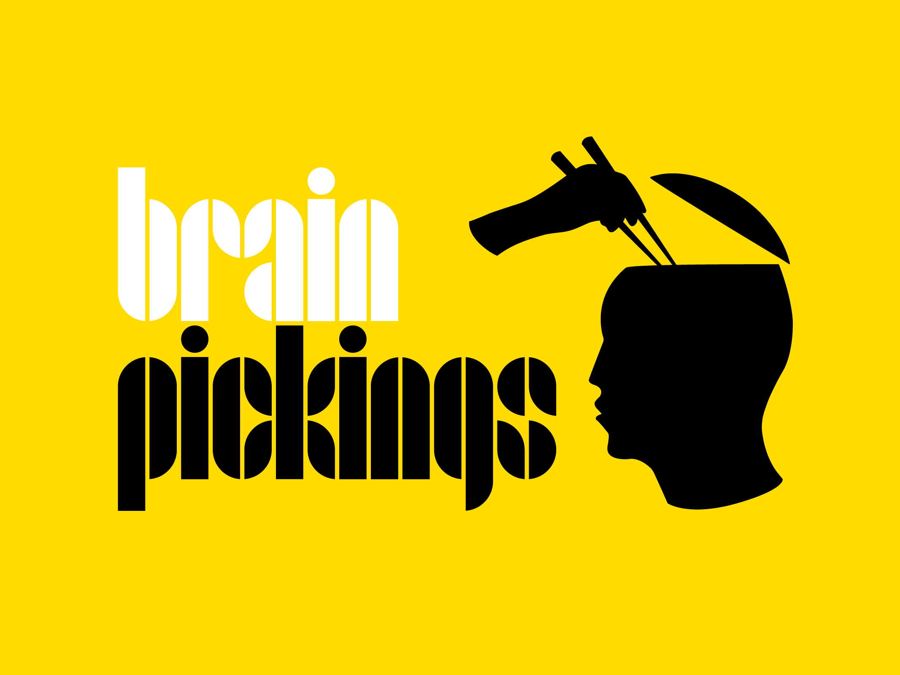

Websites that offer knowledgeable content have the power to make you smarter in countless ways
By presenting well-researched articles, expert opinions, and educational resources, these platforms enable users to expand their understanding and gain valuable insights.
Navigating through these websites can unlock a wealth of information, fostering continuous learning and personal growth.
TED's slogan is "thoughts worth spreading." TED Talks is a video assortment as short, strong discourses regarding every matter under the sun (18 minutes or less).
Cerebrum Pickings has fascinating posts drawn from craftsmanship, science, plan, history, and reasoning.
99U's significant experiences on efficiency, association, and administration assist imaginative individuals with pushing thoughts forward.
Lynda has great many video instructional exercises covering specialized, inventive, and business abilities, all educated by industry specialists.
College of Individuals is a not-for-profit, educational cost free web-based college situated in California and focused on instructive access and consideration.